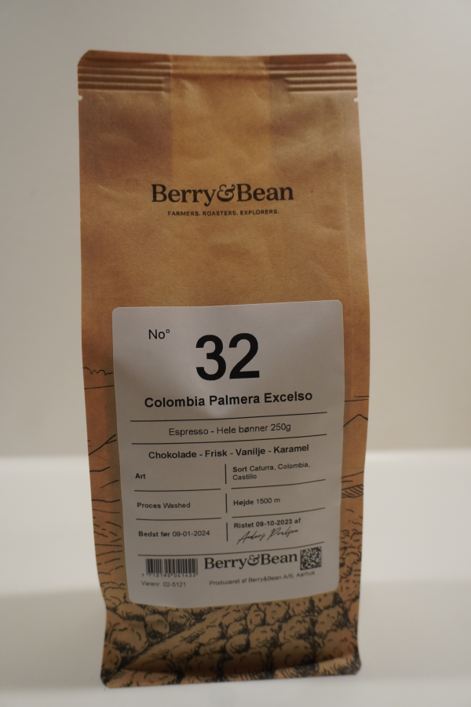
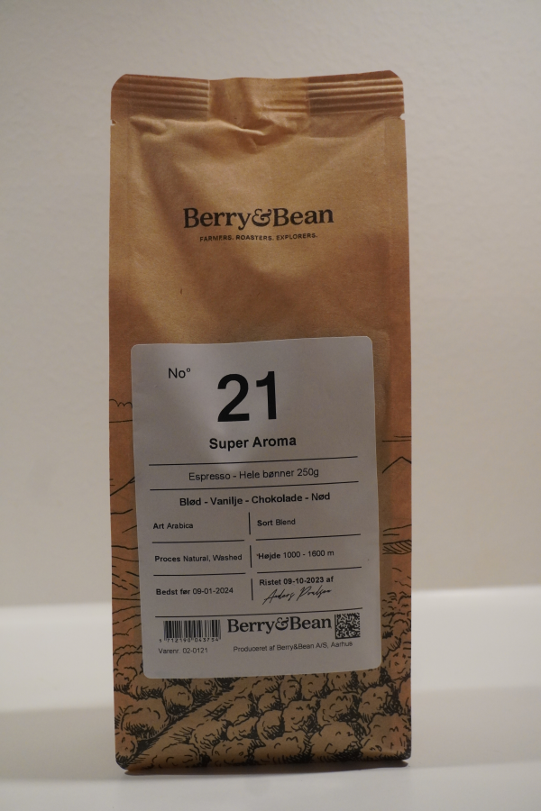
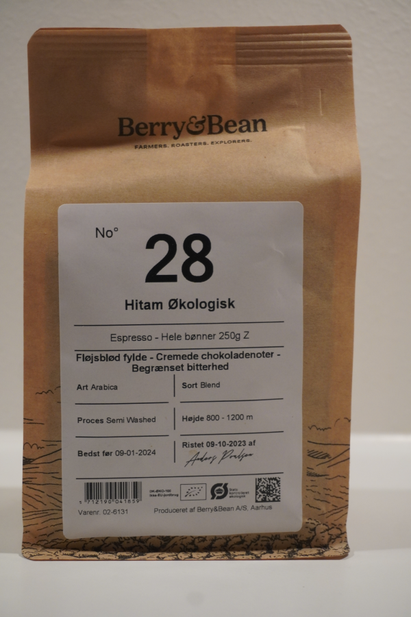

Typer af bønner
Når du skal ud og vælge, hvilke bønner du skal have, er der overordnet set to sorter af bønner af vælge i mellem: Arabica og Robusta
Nogle af de finere robusta-sorter anvendes i kaffeblends kombineret med arabica-bønnerne. Robusta-bønnerne giver kaffen en dybere smag og en god crema.
Robusta-bønnen
Arabica-bønnen stammer oprindeligt fra Etiopien, der anses for at være oprindelsesstedet for kaffen. Arabica-bønnen dyrkes på plantager i Etiopien, Latinamerika, Brasilien, Indonesien og Columbia, og denne sort udgør cirka 75-80% af hele kaffebønne-produktionen i verden. Smagen fra Arabica-bønner er typisk mild og sød med noter af frugt, sukker og bær. Arabica-bønner er knap så bitre som robusta-bønnen, og har også en god syrlighed, som gør kaffen meget eftertragtet.
Robusta-bønnen stammer oprindeligt fra det centrale og vestlige Afrika, primært Congo, og anvendes primært til instantkaffe og espresso. Robusta-bønner dyrkes primært i Afrika og Indonesien, og smagen er stærkere og skarpere end arabica-bønnen, og har noter af gran og en peanut-lignende eftersmag. Robusta-bønnerne indeholder dobbelt så meget koffein som arabica-bønner, og har samtidig et lavere syreindhold, hvilket gør, at Robusta-bønner ofte anses som værende af dårligere kvalitet end arabica-bønner.
Ristningsgrad
Kafferistning er den varmeproces, der udvinder smag og aroma ud af de rå kaffebønner. Den overordnede måde at inddele ristningen af bønnerne på er: Lysristet, mellemriststet og mørkristet
Lysristede bønner

NO°32
NO°32
COLOMBIA, PALMERA, ESPRESSO
Chokolade - Frisk - Vanilje - Karamel
Klassisk colombiansk espresso. Cremet, sødmefuld chokolade og elegant
Palmera fremhæver kaffen, der produceres i hele Huila-afdelingen i landet, med en ren og sød profil, der repræsenterer arbejdet og dygtigheden hos de småbønder, der kalder regionen hjem
Lysristet kaffe ristes indtil temperaturen når ca. 180-205°C, og bønnerne har en lysebrun farve. Den lyse ristning bevarer kaffens naturlige smag og aroma i større grad end ved mørkere ristning, hvilket giver en kaffe med en let og fin body, en bemærkelsesværdig syre og en sødmefuld, frugtagtig duft.
- Lysebrun farve
- Tør overflade
- Høj syre
- Frugtagtig, sødmefuld duft
- Bevarer kaffens oprindelige egenskaber
- Let body
- Højt koffeinindhold
Mellemristede bønner

NO°21
NO°21
SUPER AROMA ESPRESSO
Blød - Vanilje - Chokolade - Nød
Når din Cappucinno, latte etc., virkelig skal være blød og rund
Super Aroma er et helt klassisk espresso-blend. Helt uden bitterhed, stor fylde i form af sødme og chokolade - alle de komponenter der giver en helt smooth mælkekaffe - eller en ditto Americano
Mellemristet kaffe ristes indtil temperaturen når ca. 210-220°C, og bønnerne har en brun farve. Denne type ristning bevarer kaffens naturlige smag og aroma i en mindre grad end lysere ristninger, men komplimenteres af en fyldig og rund body med en sødere og mørkere smag.
- Brun farve
- Tør overflade
- Balanceret smag og syre
- Let sødme i smag
- Medium-fyldig body
- Medium koffeinindhold
Mørkristede bønner

NO°28
NO°28
HITAM ØKOLOGISK BLEND, ESPRESSO
Fløjsblød fylde - Cremede chokoladenoter - Begrænset bitterhed
Mørkristet økologisk espresso med meget bløde noter og stor stor fylde. Et blend fra Papua Ny Guinea og Sumatra. Ristet mørkt for at fremme den kraftige smag, men også med en utrolig lav bitterhed
Mørkristet kaffe ristes indtil temperaturen når ca. 225-230°C, og bønnerne har en flot mørkebrun farve samt en let olieret overflade. Denne type kaffe har en meget fyldigere body end lysere ristninger, da smag og aroma påvirkes af den længere ristning. Syren forsvinder og erstattes af en bittersød eftersmag og en let krydret smag.
- Mørkebrun farve
- Let olieret overflade
- Kraftig smag og aroma
- Bittersød eftersmag
- Fyldig body
- Medium til lavt koffeinindhold